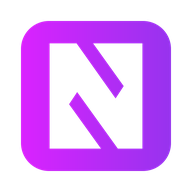

- Yazılım
- Kurgu
- Arayüz
BurakPekel
Yaratıcı uygulamalar geliştirmeyi ve fikirleri gerçeğe dönüştürmeyi seviyorum. Aynı zamanda video kurgu ve UI/UX tasarımı tutkunu bir geliştirici ve video editörüyüm. Şu sıralar Mixora, Aurora Radios, SpotiDrop ve Hotpad üzerinde çalışıyorum.
Çalışmalar
- Windows

Notchify
Ekranın üstüne Dinamik Ada ekleyen masaüstü uygulaması: müzik, bildirimler, pano geçmişi ve widget'lar.
- Windows

Mixoraeski adıyla Fluent Mixer
Uygulama seslerini Oyun, Sohbet, Medya ve Aux gruplarına ayıran ses mikseri.
- Windows
LunaDock
Masaüstündeki dosya ve kısayolları düzenli yığınlara ayıran düzenleyici.
- Windows

Hotpad
İkinci bir klavyeyi makro klavyeye çevirir.
- Windows

SpotiDrop
Müziği etiketli MP3 olarak Spotify Yerel Dosyalar'a indirir.
- Windows

Aurora Radios
Ruh haline, türe ya da ülkeye göre dünya radyoları.
- Windows

VICE Sonar
SteelSeries GG Sonar için hafif kontrol aracı: ses, ChatMix, EQ ve RGB.
- Windows

GlideSnap
Alt tuşuyla pencereleri farenin her yerinden sürükleyip boyutlandırın.
- Windows

vOrganizer
Dağınık klasörleri dosya türüne göre ayıran, tek tıkla geri alınabilen düzenleyici.
- Web
BokMail
Kişisel adresinizi vermeden kullandığınız geçici e-posta servisi.
- Discord botu
Goliath
Moderasyon, seviye, müzik ve yardım paneliyle çok amaçlı Discord botu.
- Discord botu
Lolable
League of Legends toplulukları için rank, maç dökümü ve liderlik tablosu botu.
- Microsoft Store
Hepsi Store profilimde
Hotpad ve SpotiDrop Store'da değil; kendi sitelerinden indirilir.
Kurgu
SineOrbit, film sahnelerine hayat verdiğim sinematografik edit sayfam. Aşağıda altı vitrin paylaşımı var.


Kurgunun yanında müzik de üretiyorum; Spotify'da sanatçı profilim var.
Masaüstü
- İşletim sistemi
- Windows 11 Pro
- İşlemci
- AMD Ryzen 5 5600X
- Ekran kartı
- NVIDIA RTX 3060
- Bellek
- 16 GB DDR4 3200 MHz
- Ekran
- 2560 × 1440 · 144 Hz
- Depolama
- 1 TB NVMe SSD
- Editör
- VS Code
- Kabuk
- PowerShell 7
Şimdi
Discord durumumdan canlı okunur, on beş saniyede bir yenilenir.
- Discordkingpin1dev…Yükleniyor…Oynuyor:
- SpotifyBoştaŞu an bir şey çalmıyor.
- VS CodeKapalıŞu an kod yazmıyor.
- XboxKingpin7841Xbox oyunlarını Steam'in yanı sıra takip ettiğim platform. Game Pass ve Xbox'a özel oyunlar için.
Steam
Kütüphanemde 159 oyun var; 40 tanesini yüzde yüz bitirdim ve toplamda 9.784 başarım açtım. Bitirme oranım %74.
Steam seviyem 36 · #1473 Vice Club


Birlikte bir şeyler yapalım.
Proje fikrin mi var, birlikte çalışmak mı istiyorsun? Bir merhaba bile yeter.
admin@bokmails.com